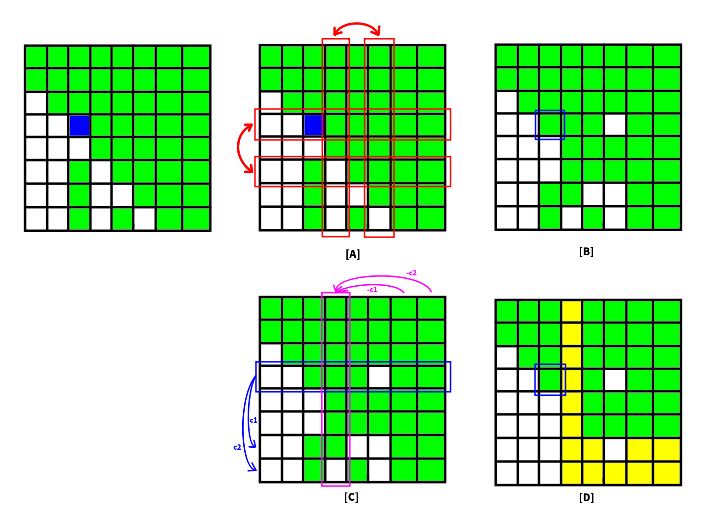
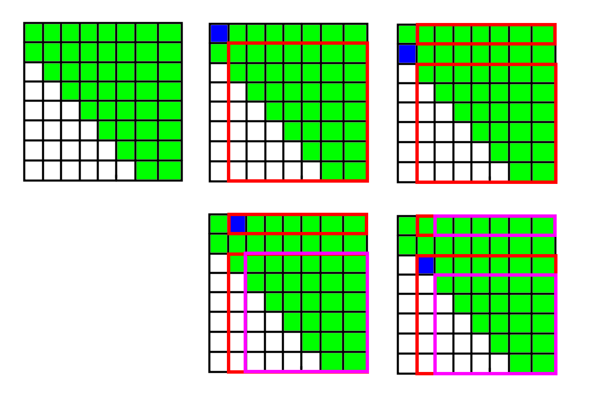

线性代数入门
遇到一道毒瘤的数理知识题，就有了本文。
矩阵
将一些元素排列成若干行，每行放上相同数量的元素，就是一个矩阵（Matrix）。
矩阵通常用大写字母表示。一个矩阵从左上角数的第行第列的数称作第项，记作或。
如果的元素可以用只与行数和列数有关的函数表示，则可以用表示。其中表示行数，表示列数。
对于的矩阵我们称之为方阵（方块矩阵）。
矩阵基本操作
加法、标量乘法、转置
加法：对于矩阵，定义矩阵加法为和对应位置上的元素相加。即。
标量乘法（Scalar multiplication）：对于矩阵和标量，他们相乘的结果是。
转置（Transposition）：对于矩阵，其转置矩阵记作，且。即横竖翻转。
矩阵乘法
定义和的矩阵乘法为
其中。
分配律：。
结合律：。
矩阵乘法不具备交换律。
矩阵初等变换
矩阵初等变换有三种，分行操作和列操作。不过行和列是对称的。
- 行交换：将矩阵的第行和第行交换。记作。
- 行数乘：将第行的每个元素都乘上一个非常数，记作。
- 行加法：第行的倍加到第行上，记作。
方阵初等变换
对于方阵而言，由于两个方阵的矩阵乘法不改变方阵的形状，因此我们可以用矩阵乘法表示方阵的初等变换。
对于，等价于左乘一个的矩阵，满足
对于操作，的条件为
对于，的条件为
对于初等列变换，则可以表示为右乘一个矩阵。设表示矩阵的第列。
对于，的条件与相同：
对于，的条件与相同：
对于，的条件是的转置：
矩阵求逆
定义单位矩阵（Identity Matrix）为主对角线上元素为，其他元素为的方阵，记作。
定义矩阵的逆矩阵为使得的矩阵。若存在这样的矩阵，称可逆。的逆矩阵记作。
定义符号表示在矩阵右边放置矩阵，形成的矩阵。
那么我们使用高斯消元将中的消成，得到，那么这里的就是。若消不成则不可逆。
相似矩阵
相似矩阵（similar matrix）是指存在相似关系的矩阵。两个的方阵和为相似矩阵当且仅当存在的可逆矩阵满足
相似矩阵的秩、行列式、特征值、特征多项式相同。
行列式
行列式通常是对于方阵定义的。
方阵的行列式（Determinant）是一个将其映射到标量的函数，记作或者。通常可以将其理解为是高维空间的欧氏体积。
定义表示所有个长度为的排列构成的集合。矩阵的行列式定义为：
其中表示排列的逆序对个数对的幂。即设表示排列的逆序对个数，则。
行列式操作
方阵乘积的行列式等于行列式的乘积：。证明
若可逆，则。
行列式的计算
直接计算
根据行列式的公式，易得
- 对方阵做行（列）交换，行列式反号；
- 对方阵做行（列）数乘，行列式乘上同样的常数。
- 对方阵做行（列）加法，行列式不变；
- 对于上（下）三角矩阵，其行列式为主对角线上元素的积。
因此可以简单地使用高斯消元在的时间内求出行列式。
拆行列式
行列式按行拆开：设，那么有
按列拆开同理。
余子式与伴随矩阵
余子式：对于矩阵，的余子式定义为去掉第行第列的矩阵的行列式。
代数余子式：对于矩阵，的代数余子式。
代数余子式求行列式：。
余子矩阵：代数余子式构成的矩阵。
伴随矩阵：的伴随矩阵定义为的余子矩阵的转置，即，记为。
伴随矩阵关于逆矩阵的性质：如果可逆，那么。
其他环上行列式的计算
对于环上的阶方矩阵，其行列式记作
那么对于这种矩阵的高斯消元，要点是：消成对应的单位元。
可以类比加法乘法环的高斯消元，把除法换成求逆之类的。
矩阵特征值与特征多项式
特征值与特征向量
对于矩阵，若存在向量和标量满足
即
则称是矩阵的特征向量（Eigenvector），且是对应的特征值（Eigenvalue, or characteristic root）。
上面的等式可以等价地写作
特征多项式
若不是零向量，则的充要条件是。而可以表示为的一个多项式。
根据行列式的计算公式，易知是一个次多项式。那么不妨设它的个零点为，则的特征多项式（Characteristic polynomial）为
不妨设。
根据特征多项式的定义，易得
- ；
- ；
特征多项式的计算
首先，你可以通过对高斯消元来求特征多项式，但你不能对高斯消元后再求的特征多项式，两者是不同的。
根据相似矩阵性质，我们知道与相似的矩阵的特征多项式是相同的。而上三角矩阵的特征多项式是很容易计算的（主对角线上的元素相乘）。因此我们可以尝试把化为与其相似的上三角矩阵。遗憾地是，这样的变换复杂度没有保证。不过，我们有一个类似上三角矩阵的矩阵，叫作上海森堡矩阵。而我们可以快速将变换为与其相似的上海森堡矩阵，然后求出上海森堡矩阵的特征多项式，也就得到了的特征多项式。
上海森堡矩阵
定义上海森堡矩阵（Upper Hessenberg Matrix）为方阵满足。即
也就是说主对角线下面的一条对角线也可能非 0。
如何将化为与其相似的上海森堡矩阵？考虑消元。

如图：
- 绿色表示非元素；
- 蓝色表示我们当前考虑的元素；
- 黄色表示发生变化的元素（不确定是还是非）。
左图是我们目前的矩阵的状态。我们想将下方的非零元素消掉。首先若是，我们就要找下方第列非的元素与之替换（如果找不到就不用消元了）。
图 A：假设我们找到了，那么我们就需要做的操作。而为了保证操作后的矩阵与相似，我们需要在右边乘上它的逆矩阵。而对应的矩阵的逆矩阵是其本身。右边乘上对应的矩阵，实际上就是做的操作。因此在图 A 中我们进行了行交换和列交换。
图 B 是我们把置为非零元素后的状态。
图 C：接下来进行消元。我们相当于做若干次行加法操作。同样的为了保证操作后的相似，我们需要右乘行加法操作的逆矩阵。而行加法操作的逆矩阵就是将反号后的行加法矩阵（把它减回去）。放到右边乘就对应了列加法的矩阵。因此在图 C 中我们进行了行加法和列加法操作。（同时列加法操作没有影响到第列。如果你想使用这个算法消成上三角矩阵，那么就会有影响）。
图 D 就是消元后的矩阵，并展示了哪些元素受到影响。
算法的伪代码描述为
时间复杂度。
上海森堡矩阵的行列式
显然，若是上海森堡矩阵，则也是上海森堡矩阵。因此我们只需要能快速求出上海森堡矩阵的行列式即可。
不妨考虑我将的行列式按第一列展开。因为第一列只有两个非元素：

设表示第到第行，第列到第列的子矩阵的行列式。考虑求。那么我们按第列展开，就得到。而子矩阵的行列式也可以按列展开！于是。那么可以继续这样展开下去。这样就可以求出也就是原矩阵的行列式了。实现的时候倒着做一次循环就行了。
复杂度也是的，因为多项式长度是的。
哈密尔顿 - 凯莱定理
哈密尔顿–凯莱定理（Cayley–Hamilton theorem）：对于矩阵的特征多项式，有。这里的表示说把多项式放在矩阵环的意义下进行，表示全矩阵，常数项可以理解为，是单位矩阵。
常系数齐次线性递推
给出和，且定义递推式
求。
思路一
首先我们可以用矩阵乘法的形式描述这个过程：
设。上式可以等价地表示为。
那么初始向量为。显然我们求出，这样也就求出了。
直接做矩阵乘法，用矩阵快速幂的复杂度是的。
考虑到这里的 A 是一个 Frobenius matrix。可以得到它的特征多项式
根据 Hamilton Cayley Theorem，有。考虑计算。
从多项式的角度理解，我们可以把表示为的形式，其中。即。而由于，因此可以得到。我们可以直接快速幂，把取模的部分改成多项式取模而在或者的时间内求出。求出来之后，设
则
由于我们并不需要求出整个向量，我们只需要求出的最后一项。而的最后一项恰好对应，因此直接代入上式即可。
这样的复杂度是或者的。
思路二
实际上我们有更简单的理解方式。
因为，那么我们继续把写成的形式，然后把写成的形式，这样一直下去，就可以把写成关于的答案。
把这个过程写成一个代码，就是多项式取模的形式。
参考文献
拓展资料
修订记录
- 2020年12月29日 第2次修订
- 2020年5月6日 创建文章